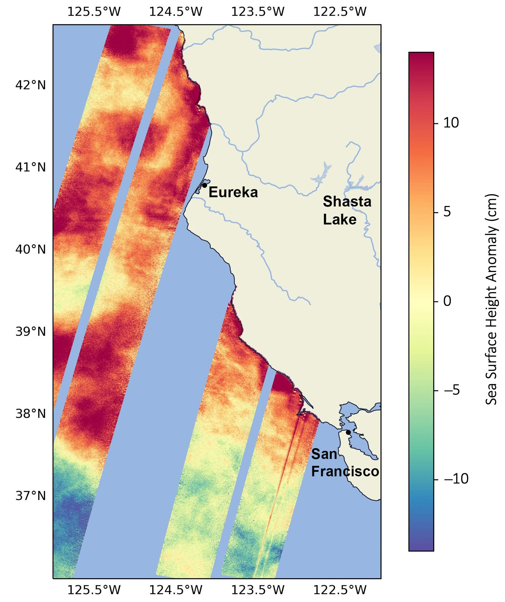

CLS · CNES / NASA · ESA
SWOT / KaRIn & S3NG / SAOOH
Earth-observation work spanning KaRIn data analysis, scientific visualisation, processing-chain development, parametric studies and altimetric-performance simulations.
PythonData analysisAltimetrySimulation

In my position at Collecte Localisation Satellite (CLS), I conducted KaRIn data analysis for the SWOT mission, using Python and data visualisation. I was also involved in advancing the processing chain and parametric analysis of the SAOOH altimeter for the Sentinel-3 New Generation (S3NG) mission, following specifications defined by Thales Alenia Space.
My work also included coding processing chains for hydrology in Python and running simulations to evaluate altimetric performance in oceanic and hydrological modes.